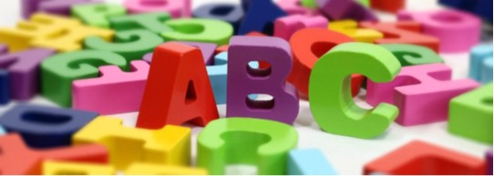

Hisszük, hogy mindenki kíváncsinak születik és meg tudja tanulni azt, amit igazán szeretne. Nincs is másra szükség,
csak izgalmas kihívásokra és kérdésekre, biztonságra, támogatásra, lehetőségekre.
Olyan oktatást szeretnénk biztosítani, amelyben a gyermekeink természetes módon sajátítják
el a boldog élethez szükséges gondolkodásmódot és képességeket.
A tanulás felszabadult, kíváncsi és alkotó folyamat marad és nem válik egy intézményrendszer által bekorlátozott „utálom- unalmas” dologgá.
Tudásvárunkban az egyéni tanulási stílusok szerinti oktatás megvalósulása mellett tesszük le a voksot.
Nagy hangsúlyt fektetünk a mindennapi angol nyelv tanítására, a környezetismeret tantárgyat két tannyelven oktatjuk.
Tanulóink fejlődését Difer méréssel követjük nyomon.
Az olvasás-írás tanításakor a Mesezörej módszert alkalmazva tesszük élvezetesebbé és hatékonyabbá a gyerekek számára ezen készségek elsajátítását.

Tudásvárunkban fókuszban:
a kíváncsiság,
a kreatív gondolkodás és problémamegoldás,
a hatékony információszerzés és felhasználás,
az együttműködés és csoportmunka,
a rugalmas viselkedés,
az egyénre szabott fejlődés lehetősége áll.
Mindeközben nagyon fontos, hogy mind a gyerekek, mind a tanítók nagyon jól érzik magukat.
Egy olyan tanulóközösség kialakítása a cél, ahol a korosztályi csoportokban:
Stressz és teljesítmény kényszer nélkül jutunk el használható ismeretekhez.
Nem kell tanórába sűríteni a lexikális tudást, hanem projekt alapon,
a problémát boncolgatjuk és így jutunk el a megoldáshoz.
Mindenki megtalálja a maga számára érdekes feladatot.
Nem az ötfokú osztályozási skála kategorizálja a gyerekeket, hanem mindenkinek a saját egyéni fejlődését értékeljük.